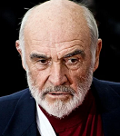

Thomas Sean Connery (Edimburgo, Escocia; 25 de agosto de 1930-Nasáu, Bahamas; 31 de octubre de 2020), conocido artísticamente como Sean Connery, fue un actor y productor de cine británico, que ganó, entre otros premios, un premio Óscar, dos premios BAFTA (uno de ellos un BAFTA Academy Fellowship Award) y tres premios Globo de Oro (uno de ellos un premio Cecil B. DeMille a la trayectoria).
Gran parte de su fama fue gracias a su personaje de James Bond, que interpretó en siete películas entre 1962 y
1983 (seis películas producidas por Eon Productions, así como Nunca digas nunca jamás, una nueva versión de
Operación Trueno producida por Warner Bros.).
En 1988, Connery ganó el premio Óscar al Mejor Actor de Reparto por su papel en The Untouchables.5 Su carrera
en el cine también incluye películas tales como Marnie, Robin y Marian, The League of Extraordinary Gentlemen,
Indiana Jones y la última cruzada, La caza del Octubre Rojo, El hombre que pudo reinar, El nombre de la Rosa,
Highlander, Asesinato en el Orient Express, Dragonheart: corazón de dragón, y La Roca. Sean Connery fue nombrado
"Knight Bachelor" por la reina Isabel II en julio de 2000. Connery ha sido encuestado como "The Greatest Living
Scot" ("El escocés más grande").
En 1989, fue proclamado como
Su oportunidad llegaría en 1962, cuando fue elegido para interpretar el papel de James Bond (https://es.wikipedia.org/wiki/James_Bond), un agente del servicio secreto británico creado por Ian Fleming y protagonista de varias de sus novelas. Su primera inmersión en el papel se produjo en la película Dr. No (1962), donde estuvo acompañado por la actriz Ursula Andress. El éxito de las películas de James Bond fue tal que se hicieron varias secuelas en las que también participó Connery:
Antes de que comenzasen los años 70, ya cansado del personaje y decidido a no encasillarse, cedió su lugar a George Lazenby, quien interpretó a Bond en solamente una película, On Her Majesty's Secret Service en 1969. El desempeño de Lazenby no conformó al público ni a la crítica (aunque su película fue bastante exitosa), debido a lo cual Connery regresó a regañadientes para protagonizar Diamonds Are Forever en 1971. Después de esta película abandonó definitivamente el papel de Bond, siendo sustituido por Roger Moore. Aunque el estigma de Bond siguió durante mucho tiempo a Connery, trabajó arduamente para desencasillarse e interpretó a personajes completamente diferentes con gran éxito, pudiendo ya a mediados de los noventa ser reconocido como un actor muy versátil. Connery regresó como Bond por última vez en la película no oficial de 1983 Nunca digas nunca jamás, que fue producida por Warner Bros. en vez de Eon Productions(que había producido la mayoría de las películas de Bond). En 2005, Connery prestó su imagen y voz para ser James Bond en un videojuego desarrollado por Electronic Arts, James Bond 007: From Russia With Love, basado en la película de Bond que él protagonizó más de cuatro décadas atrás. Varios miembros del reparto secundario de la película participaron también.